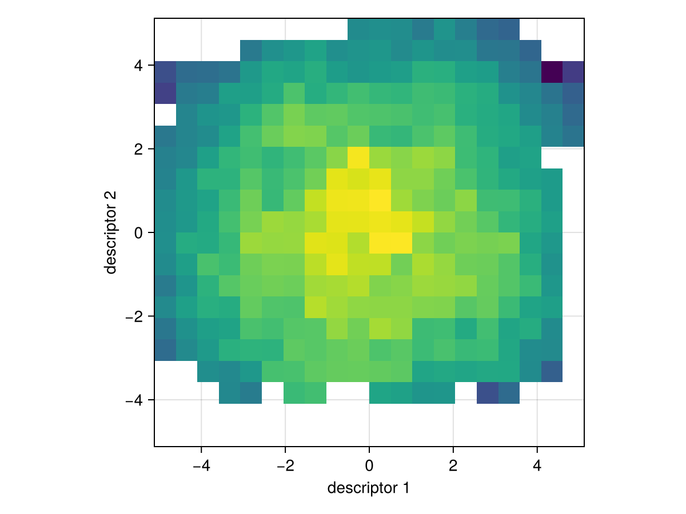

MAP-Elites on the Rastrigin function
Run it from the repository root:
julia --project examples/rastrigin_tutorial.jlQuality-diversity (QD) optimization does not look for one best solution. It fills a grid of "niches", each defined by a descriptor, with the best solution found for that niche.
using QualityDiversity
using Random: Xoshiro1. The problem
Rastrigin(10) is a benchmark over 10 real parameters. A solution's fitness is the negated Rastrigin value (higher is better, maximum 0). Its descriptor is two numbers: the mean of the first five parameters and the mean of the last five, each in [-5.12, 5.12].
prob = Rastrigin(10)
x = QualityDiversity.random_solution(Xoshiro(1), prob)
ev = QualityDiversity.evaluate(prob, x)
println("one random solution: fitness ", round(ev.fitness; digits=1),
", descriptor ", round.(ev.descriptor; digits=2))one random solution: fitness -193.5, descriptor [-2.5, 1.38]2. The algorithm
MAP-Elites keeps a grid over the descriptor space. Each round it picks batch_size solutions from the grid, mutates them with Gaussian noise of size σ, and keeps a child if it beats the current occupant of its cell.
alg = MAPElites(prob; dims=(20, 20), batch_size=100, variation=GaussianMutation(0.3))QDAlgorithm{GridArchive{Vector{Float64}, Float64, 2, ThrowOutside, Nothing}, Tuple{VariationEmitter{GaussianMutation{Float64}}}}(GridArchive{Vector{Float64}, Float64, 2, ThrowOutside, Nothing}((20, 20), [-5.12, -5.12], [5.12, 5.12], ThrowOutside(), Bool[0, 0, 0, 0, 0, 0, 0, 0, 0, 0 … 0, 0, 0, 0, 0, 0, 0, 0, 0, 0], [4.550807123e-315, 4.490440996e-315, 0.0, 0.0, 1.1323309059963373e-308, 1.9810952704511e-310, 2.803920358396e-309, 2.80392035839596e-309, 1.98109527090644e-310, 2.54639758557e-312 … 0.0, 0.0, 0.0, 0.0, 0.0, 0.0, 0.0, 0.0, 0.0, 5.9e-322], StaticArraysCore.SVector{2, Float64}[[4.498822247e-315, 4.42780201e-315], [0.0, 0.0], [0.0, 0.0], [4.33924094e-315, 4.38592785e-315], [4.347395474e-315, 4.44440657e-315], [4.35433263e-315, 4.446696503e-315], [4.3740083e-315, 0.0], [4.40645039e-315, 0.0], [0.0, 0.0], [4.40318679e-315, 4.52959408e-315] … [5.0e-324, 0.0], [0.0, 5.0e-324], [9.0e-323, 5.0e-324], [1.0e-323, 5.0e-324], [5.0e-324, 5.0e-324], [1.2e-322, 5.0e-324], [1.0e-323, 5.0e-324], [5.0e-324, 5.0e-324], [4.857420705e-315, 4.85745628e-315], [4.85749185e-315, 4.857527423e-315]], [#undef, #undef, #undef, #undef, #undef, #undef, #undef, #undef, #undef, #undef … #undef, #undef, #undef, #undef, #undef, #undef, #undef, #undef, #undef, #undef], [nothing, nothing, nothing, nothing, nothing, nothing, nothing, nothing, nothing, nothing … nothing, nothing, nothing, nothing, nothing, nothing, nothing, nothing, nothing, nothing], Int64[], 0.0, 0.0, 0.0), (VariationEmitter{GaussianMutation{Float64}}(GaussianMutation{Float64}(0.3), 100),))3. Run it
The budget counts evaluations. Passing a seeded rng makes the run reproducible.
result = solve(prob, alg; budget=100_000, rng=Xoshiro(1))QDResult after 100000 evaluations
archive: GridArchive with 317 of 400 cells occupied
qd_score: 91262.10642648741
coverage: 0.7925
max_fitness: -36.09277954655117
mean_fitness: -122.106919790260554. Read the results
result.history has one entry per round with the archive metrics.
for record in result.history[[1, 100, end]]
println("after ", lpad(record.n_evals, 6), " evaluations: coverage ",
round(record.coverage; digits=3), ", max fitness ",
round(record.max_fitness; digits=1), ", QD score ",
round(record.qd_score; digits=0))
endafter 100 evaluations: coverage 0.16, max fitness -113.8, QD score 14693.0
after 10000 evaluations: coverage 0.475, max fitness -41.6, QD score 53377.0
after 100000 evaluations: coverage 0.792, max fitness -36.1, QD score 91262.0The archive itself is in result.archive. The metric functions work on it directly, and QualityDiversity.elites iterates over the stored solutions.
archive = result.archive
println("\n", length(archive), " of ", QualityDiversity.capacity(archive),
" cells filled (coverage ", round(coverage(archive); digits=3), ")")
println("best fitness: ", round(max_fitness(archive); digits=2))
best_x, best_ev = argmax(pair -> pair[2].fitness, collect(QualityDiversity.elites(archive)))
println("best solution: ", round.(best_x; digits=2))
317 of 400 cells filled (coverage 0.792)
best fitness: -36.09
best solution: [-0.98, -0.14, 1.06, -1.11, 1.17, -0.03, -0.07, 2.21, 0.82, -0.02]A text picture of the grid: darker means higher fitness, blank means empty. Rows are the second descriptor, columns the first.
shades = collect(" ░▒▓█")
fitnesses = fill(NaN, 20, 20)
for (_, ev) in QualityDiversity.elites(archive)
i = QualityDiversity.cell_index(archive, ev.descriptor) - 1
fitnesses[i ÷ 20 + 1, i % 20 + 1] = ev.fitness
end
lo, hi = extrema(filter(!isnan, fitnesses))
println()
for row in 1:20
println(join(isnan(f) ? ' ' : shades[2 + round(Int, 3 * (f - lo) / (hi - lo))]
for f in fitnesses[row, :]))
end
▒▒ ▓▓ ▓▓▓▓ ▒▒
▒▒▓▓▓▓▓▓▓▓▓▓▓▓▓▒▒
▒▒▓▓▓▓▓▓▓▓▓▓▓▓▓▓▓▒▒
▒▓▓▓▓▓▓▓█▓██▓▓▓▓▓▓▒
▒▓▓▓▓▓▓███▓▓▓▓▓▓▓▓▓
▒▓▓▓▓▓▓███▓▓███▓▓▓▓
▒▓▓▓▓▓▓████▓██▓▓▓▓▓
▒▓▓▓████████▓▓▓▓▓▓▓
▒▓▓▓▓█████████▓▓▓▓▓
▒▓▓▓▓▓▓█████▓▓▓▓▓▓▓
▒▓▓▓▓▓▓▓███▓▓▓▓▓▓▓▓
▒▒▓▓▓▓▓▓▓██▓█▓▓▓▓▓
▒▒▒▓▓▓▓▓▓▓▓▓▓▓▓▓▓▓▒▒
▒▓▓▓▓▓▓▓▓▓▓▓▓▓▓▓▒▒▒
▒▒▒▓▓▓▓▓▓▓▓▓▓▓▓▓▓▒▒▒
▒▒▒▒▓▓▓▓▓▓▓▓▓▓▓▓▒▒░▒
▒▒▓▓▒▓▓▒▓▒▒▒▒▒
▒▒▒▒▓▒▒▒With a Makie backend loaded, the archive draws as a heatmap; see Plotting archives.
#md
using CairoMakie
heatmap(archive; axis=(xlabel="descriptor 1", ylabel="descriptor 2", aspect=1))
5. Things to try
- A different mutation size:
GaussianMutation(0.1)orGaussianMutation(1.0). - A crossover that moves along the line between two elites:
variation=IsoLineVariation(0.01, 0.2). - A mutation that keeps every entry inside the box [-5.12, 5.12]:
variation=PolynomialMutation(-5.12, 5.12; eta=20). With Gaussian mutation most stored solutions drift outside it, andRastriginclips them when scoring. - A finer grid:
dims=(40, 40). - Zoom into part of the descriptor space and ignore everything outside:
MAPElites(prob; dims=(20, 20), bounds=((-2, 2), (-2, 2)), outside=RejectOutside()). - Step one round at a time instead of calling
solve:state = init(prob, alg; budget=10_000, rng=Xoshiro(1)); step!(state).